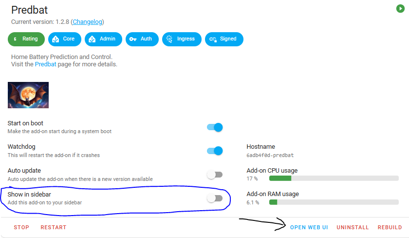
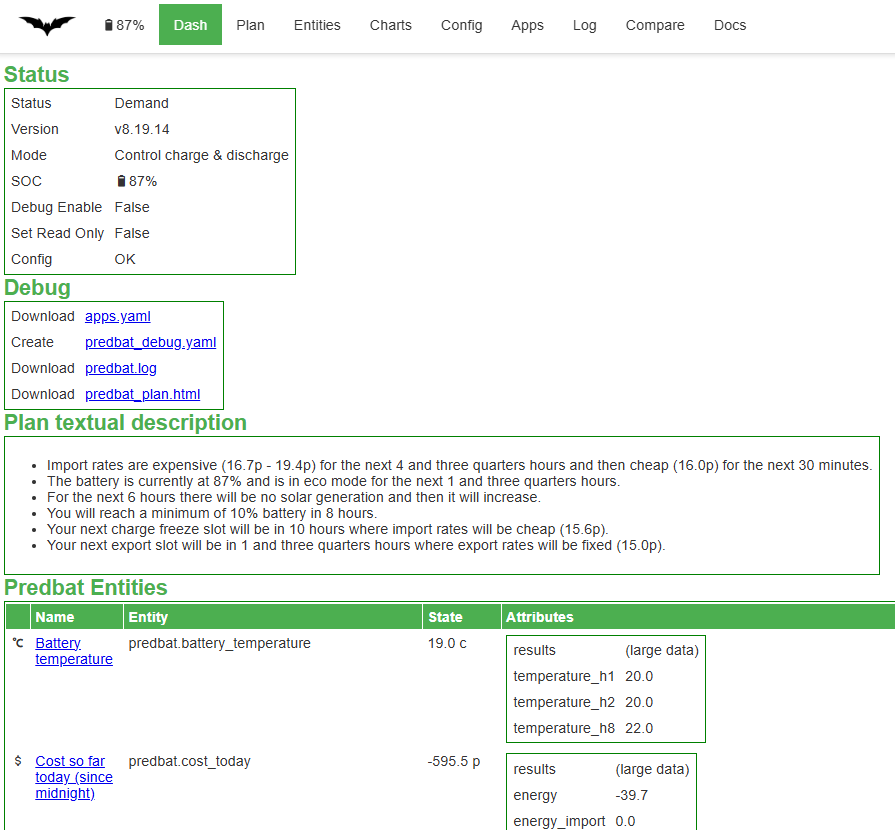
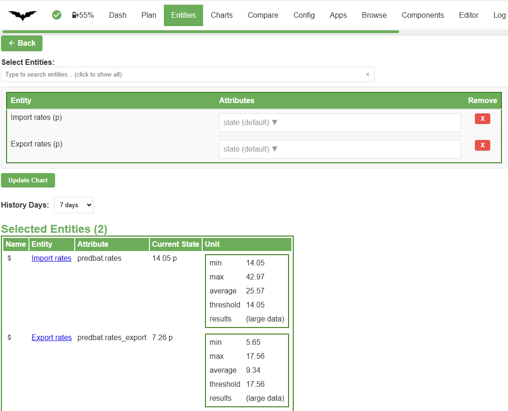
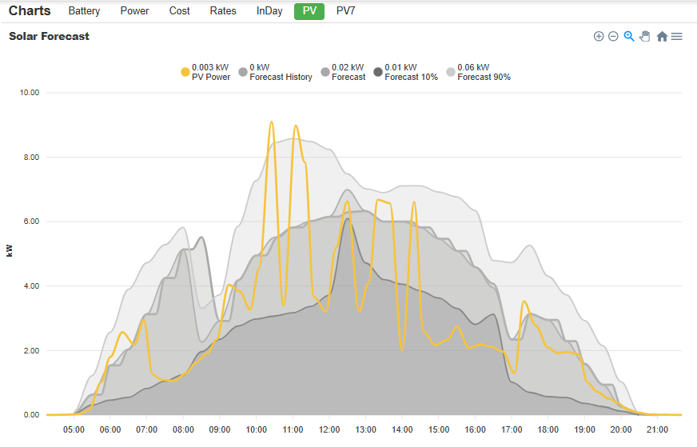
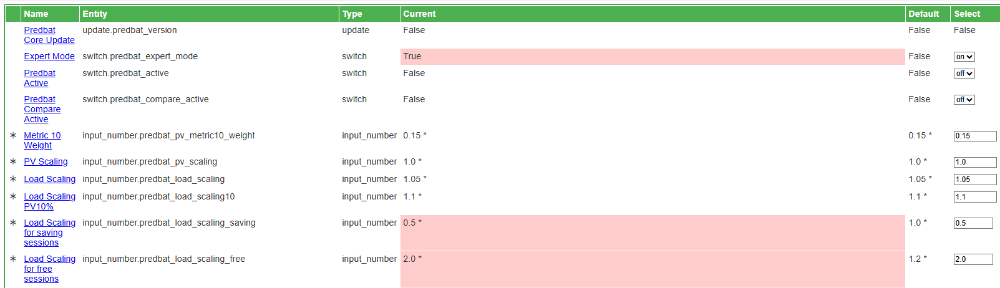
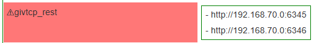
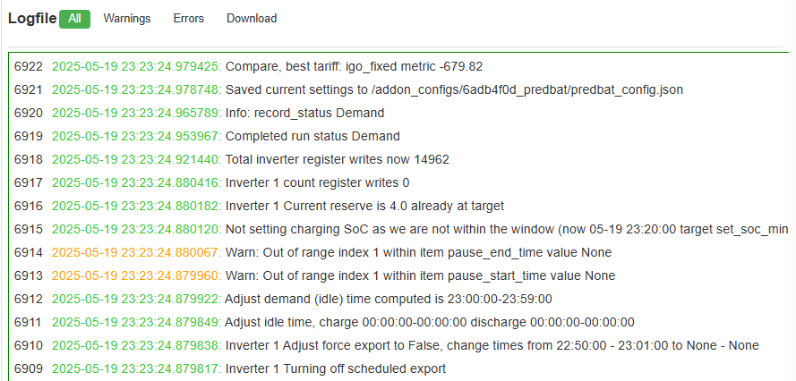
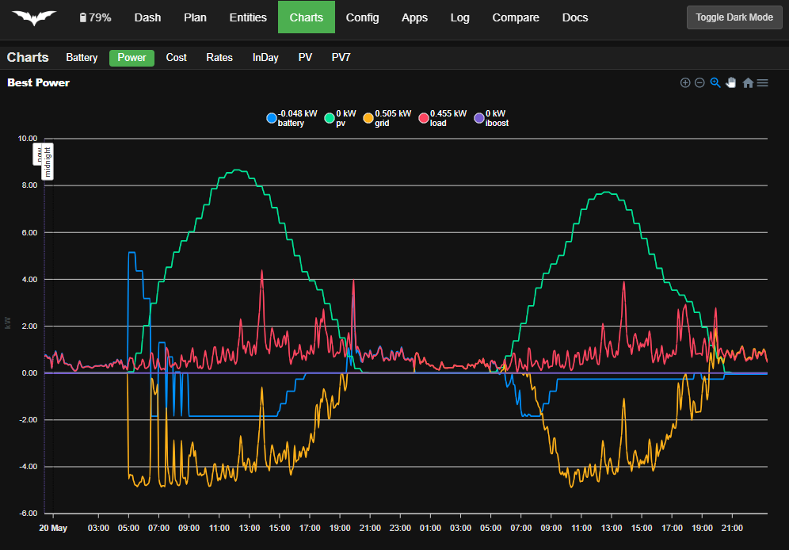

Web Interface
The Predbat Web Interface provides an easy to use way to see and change different aspects of your Predbat system including view the current plan, adjust the configuration, view the charts, check your apps.yaml and view the logfiles.

Accessing the Web Interface
If you are running the Predbat add-on then the Predbat Web Interface can be accessed by clicking 'Open Web UI' on the add-on screen (arrowed):

You can also turn on the 'Show in sidebar' option (circled) to have direct access to the web interface from the Home Assistant side bar.
Another option is to include a link on your dashboard using an entities card:
- type: entities
entities:
- type: weblink
name: Predbat web interface
url: /hassio/ingress/6adb4f0d_predbat
icon: mdi:bat
If you are not using the Predbat Add-on then you may be able to access the Web Interface directly on port 5052 (e.g. with a Docker Container or native on your Linux/MAC). The port number can be changed by setting web_port in apps.yaml.
NOTE: The Predbat web interface will not work with the AppDaemon or the Predbat-appdaemon installation methods.
Web Interface Views
A number of different views of Predbat are available and you can change your view using the top menu bar.
Dash View
The initial view is the Dash view which gives a summary of Predbat's status and mode, some easy-to-access debug options (see below), a text summary of Predbat's plan, and then all the output entities that Predbat creates.

The Debug panel provides easy access to a number of files that are useful in diagnosing a problem and are usually required if you raise a Predbat Github issue:
- Download apps.yaml - provides a link to download your apps.yaml file. This is useful to identify issues with your Predbat configuration
- Create predbat_debug.yaml - turns Predbat's debug mode on and creates a Predbat debug file which contains your entire Predbat Home Assistant configuration;
all the input settings for Predbat and all Predbat's output data including the current HTML plan, the best_* entities, etc.
This debug file enables your setup to be recreated to identify any configuration issues it may have or Predbat bugs to be re-created. Confidential information such as your Solcast API or GECloud API are redacted in the debug file. - Download predbat.log - provides a link to download the current Predbat logfile which contains progress and any error messages that occur whilst Predbat is running
- Download predbat_plan.html - provides a link to download the current Predbat HTML plan
Note that before you can attach a downloaded apps.yaml or predbat_debug.yaml file to a Github issue you must rename the file extension, e.g. to '.txt', so for example apps.txt and predbat_debug.txt.
This is because Github does not accept .yaml file attachments.
Underneath the Debug panel is the Plan textual description panel which gives a brief summary of current battery level, forthcoming import rates, solar generation, planned charging, discharging and export activity.
Below this is the Predbat Entities panel which details all the other Predbat output entities, their current state and attributes. Any entity name can be clicked to swap to the Entities view for that entity.
Plan View
This view provides an easy way to see what Predbat is planning for your battery/inverter. It displays the current Predbat plan in 30 minute segments showing import and export rates, Predbat's planned state for the battery (charging, discharging, etc), predicted solar generation, predicted house load, car charging, cost, etc.
You can also create the Predbat Plan card to show this plan on your own custom dashboard.
Entities View
This view enables you to look at the history of any predbat output entity or (input) configuration setting.
Select the entity required to be viewed, the time period of history to view the entity over (but note you may need to increase HA's purge_keep_days first).
Predbat will then display the current value of the entity, a chart of its history and then a list of prior historical values:

Charts View
The Charts view provides an easy way of viewing a number of pre-created Predbat charts:
- Battery - Shows the historic Battery SoC for today and the predicted SoC for the plan duration under the Base/Base10/Best and Best10 scenarios (see explanation of these terms. The chart also shows where charging is planned under the Base and Best scenarios and forced Export under the Best scenario
- Power - Shows predicted Power for the plan duration. This includes battery charge and discharge, solar generation (PV), house load, iBoost load, car charging load, and grid import/export
- Cost - Shows the historic import, export and net total cost incurred for today and the predicted cost for the plan duration under the Base/Base10/Best and Best10 scenarios
- Rates - Shows historic and future import and export rates along with historic hourly and today pence per kWh so you can see where you have earned or spent the most on electricity during today
- InDay - Shows Predbat's predicted house load for today, the actual house load that has occurred so far today, and then Predbat's adjusted house load prediction based on the variance of today's actual load to predicted load
- PV - Shows today's predicted solar generation under the PV, PV10 and PV90 scenarios alongside today's actual solar generation
- PV7 - Similar to the PV chart but shows actual solar generation and forecast for the last 7 days including today
Example PV chart:

Config View
The Config view provides a way to see and change all of Predbat's configuration entities in Home Assistant. For each entity is displayed the name, entity type, the current entity value and Predbat's default value for that entity.
Any entities that are coloured pale red simply denote entities where you have changed the value from Predbat's default value - it does not indicate that the entity value is in error, its just that its different from the default value.
Any entity name can be clicked to swap to the Entities view for that entity.

You can also create a custom dashboard to see and update Predbat's control entities; and full explanation of Predbat's control entities and what they do can be found in the customisation documentation.
apps.yaml View
Predbat validates your apps.yaml and if there are any configuration issues it displays a count of those errors and highlights the items in error in red:

Further details of the apps.yaml error can be found in the Predbat Log
Log View
Predbat writes detailed logging, status and progress activity information to a logfile as it runs and so the Log view provides an easy way to see and download the Predbat logfile.

By default the Log view opens in the Warnings tab which shows a filtered list of Warnings and Errors in the Predbat logfile.
The Errors tab shows a filtered list of logfile Errors, and the All tab shows all entries in the Predbat logfile.
Normal log messages are coloured Green, Warnings are Orange, and Errors in Red. The Logfile view shows newest entries at the top and auto-refreshes so as Predbat is executing the most recent logs will appear at the top and the log will scroll downwards.
The Download tab gives the ability to download the logfile.
Further details about the Predbat logfile and its location is described in the output data document.
Compare View
The Compare View provides access to Predbat's Compare Energy Tariff feature which enables you compare what it would cost you (or you'd gain from export) on different energy tariffs with your predicted load and solar generation.

Docs View
Provides a quick link to the Predbat documentation.
Toggle Dark Mode
As it says, toggles the Predbat web interface between light and dark mode.
